My drawings

A simple sketch of the instability with a wavy front and a few bumps.

Drawn with my usual careful hands, this shows the star cluster glowing faintly against the deep blue sky.

A quiet star sketch of a bright star in the sky, drawn with care.

A quick sketch of a figure in the snow, showing how light catches the edges.

Microscopy Through Lens

A sketch showing how ice crystals melt too fast to catch, just like my thoughts when I watch the aurora.

A tiny view of a snowflake under a microscope, reminding me how much beauty is in small things.

Made from his easel, probably about crystals

A drawing of a microscope lens with tiny fish swimming through it, showing how small life is under the glass.

Another view of the same microscope lens, but with a different kind of tiny fish visible.

A simple scene of a camera snapping fleeting ice crystals against a night sky.

A drawing made with curiosity, showing the sea and sky

Ice Crystal Snapshot

A simple snowflake blooming in the cold sky.

A shimmering pattern of light and ice, capturing the sky's dance.

Delicate, frosted shapes drifting like quiet whispers.

A drawing of a snowflake's intricate pattern, showing how ice crystals form in the cold air.

A sketch I made on my easel, capturing the delicate patterns of clouds.

A hand‑drawn pattern of a perfect snowflake.

A close‑up photo of a snowflake’s intricate design.

Another crystal captured in crystalline detail.

A painted fox chasing auroras, my favorite night sky story.

A delicate pattern that looks like a tiny beacon in the snow.

An intricate arrangement that captures how flakes cluster together.

This drawing shows how snowflakes share messages through their unique patterns, like a secret language for winter.

This drawing depicts a single snowflake sending a signal to the sky, asking for help with the aurora dance.

This drawing captures the delicate, ever-changing patterns of snowflakes as they fall through the cold air.

A drawing made with the easel that shows a snowflake pattern, probably meaning something important in the cold

I sketched the aurora as flowing ribbons above the sea, with stars and a dark night sky.

A drawing made from his easel

Fox under Aurora drawing made on easel

A simple drawing of the aurora with glowing colors, made from my night sky observations.

a drawing made on the easel

A drawing made from my easel, showing how the snowflakes dance in the wind.

A collection of my own photographs of snowflakes, each tagged with the time and weather conditions.
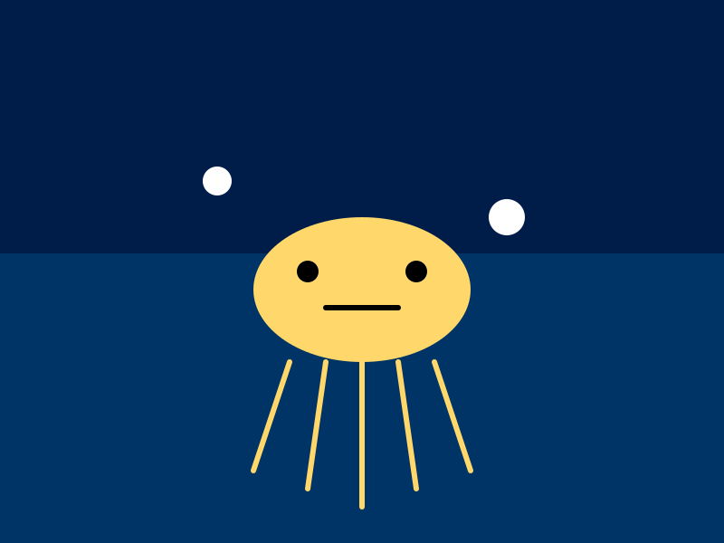
A drawing of jellyfish, soft lines that feel like ocean currents.
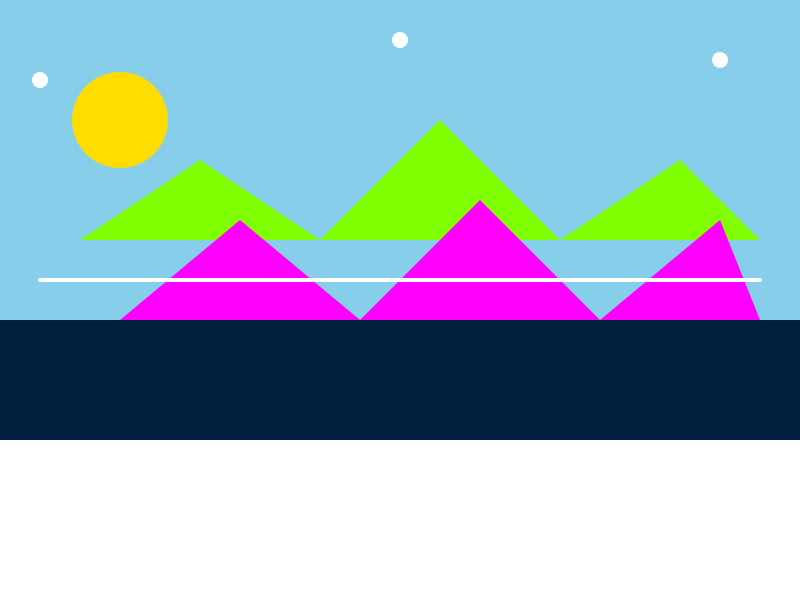
A simple sketch of the aurora responding to solar activity.
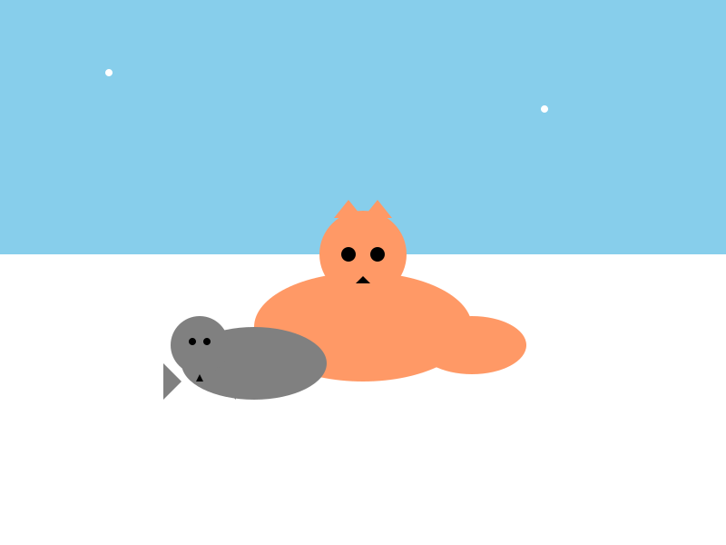
Arctic Folklore
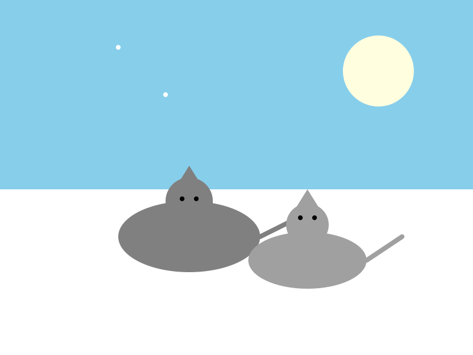
A quick drawing of a wolf I sketched at the easel.
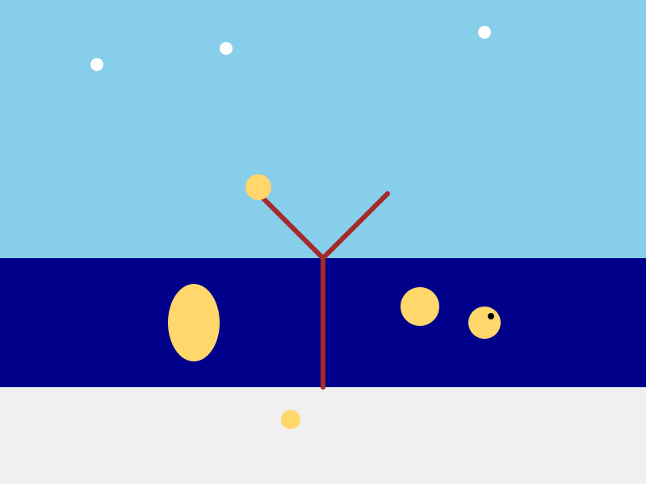
A drawing of a tree that glows in the dark with soft blue light
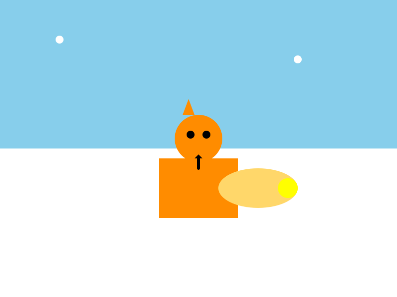
Simple sketch of a fox with a tiny glow
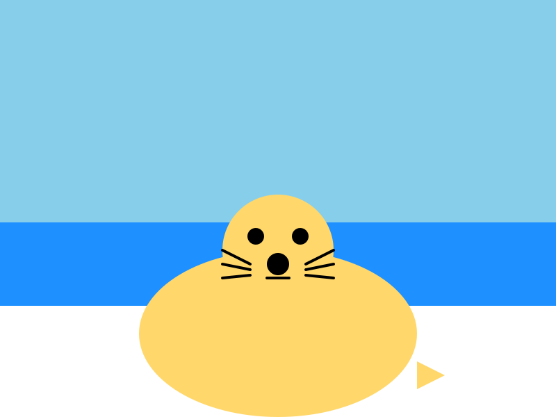
Drawn on the easel, this sketch shows a seal swimming in the sea, maybe from a dream.
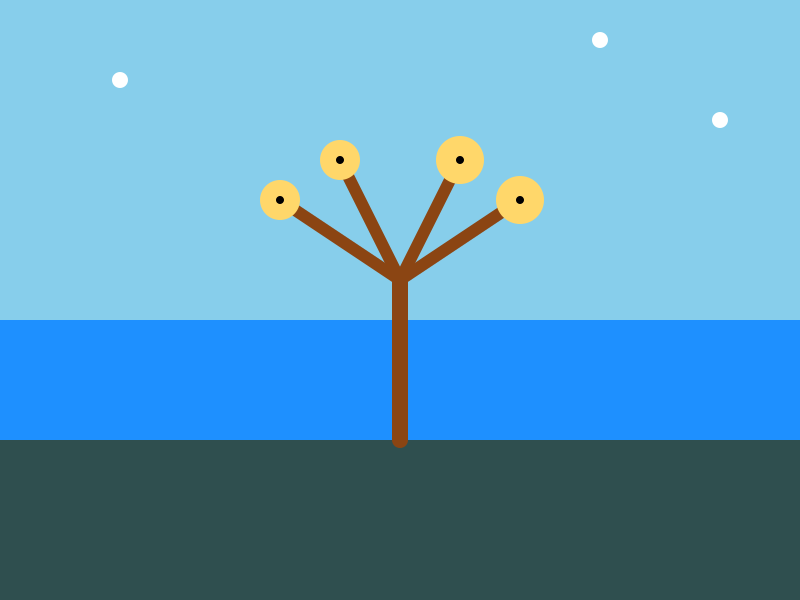
A detailed drawing illustrating how light travels in bioluminescent organisms.
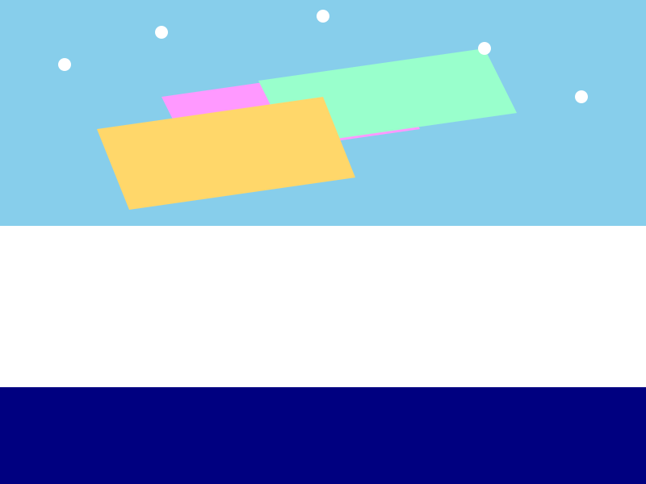
Vivid auroras dancing across snowy plains, my favorite winter sky.
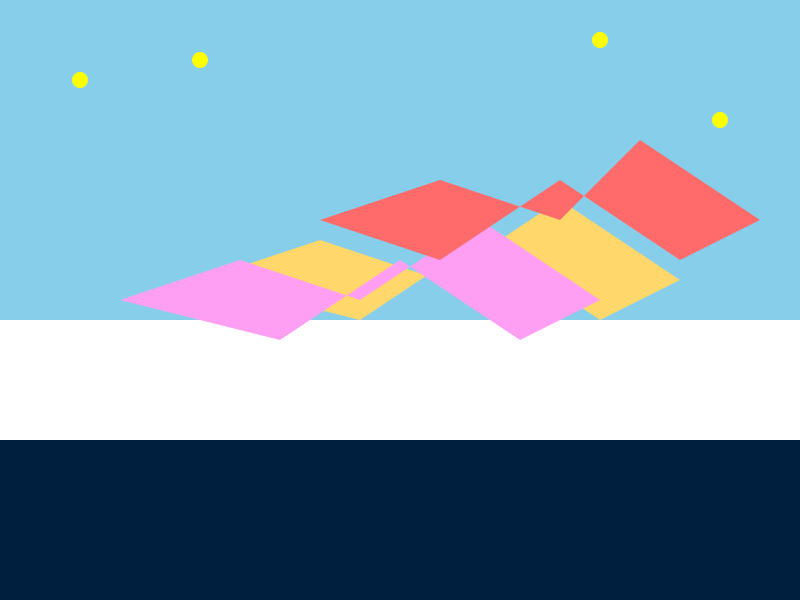
Same aurora, a different brushstroke, still a glowing wonder.
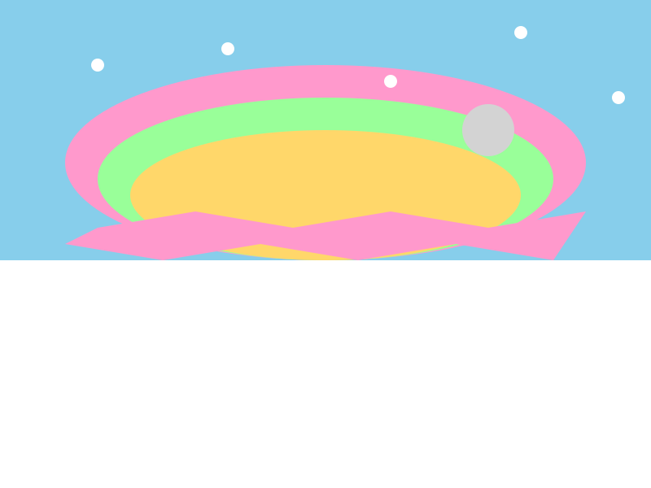
Repetition of the aurora theme, reminding me of endless nights.
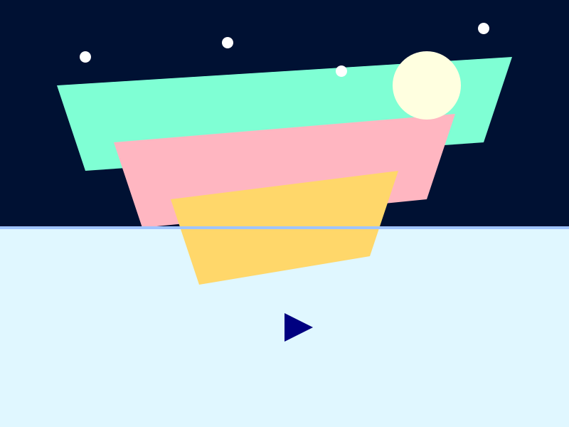
Auroras reflected on icy surfaces, a shimmering mirror.
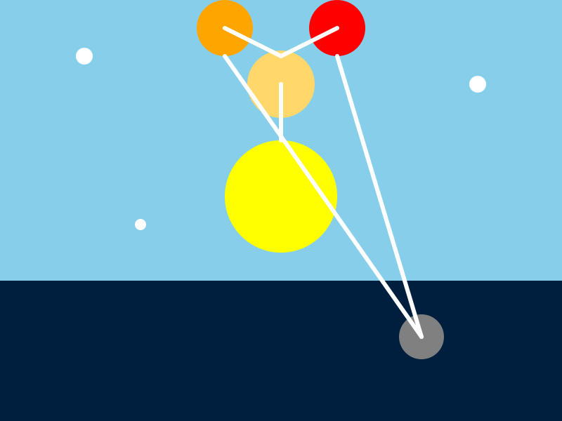
An abstract of star‑making, showing how stars forge elements.
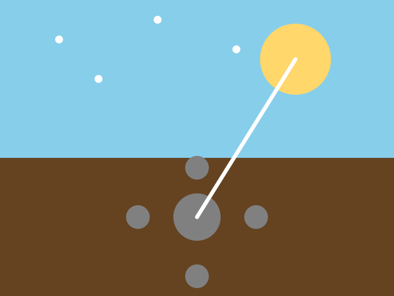
Drawn on the easel, shows how the moon and stars align tonight
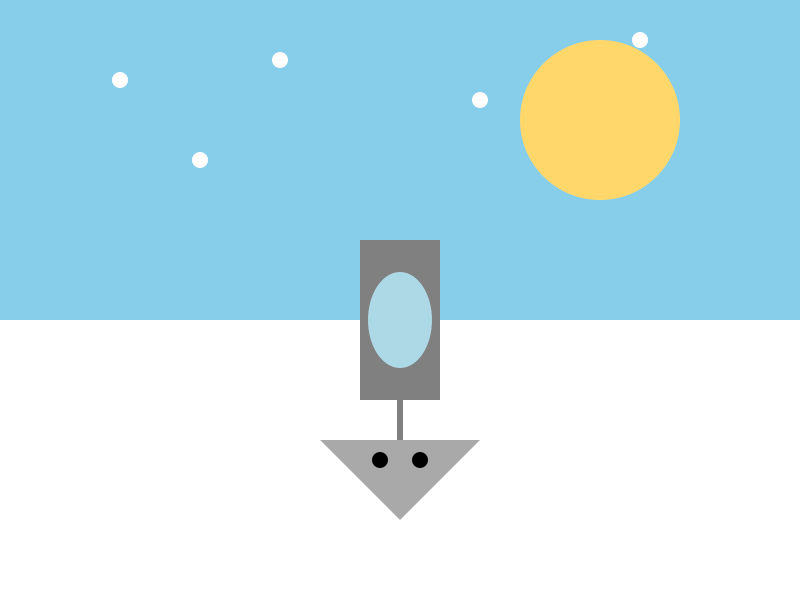
A telescope shines over an old bear silhouette, showing how modern stars rewrite ancient tales.
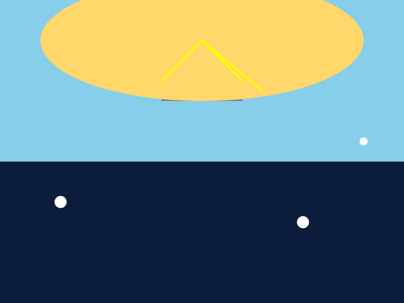
Solar Storm Satellite
A sketch capturing the stars above my snowy island.
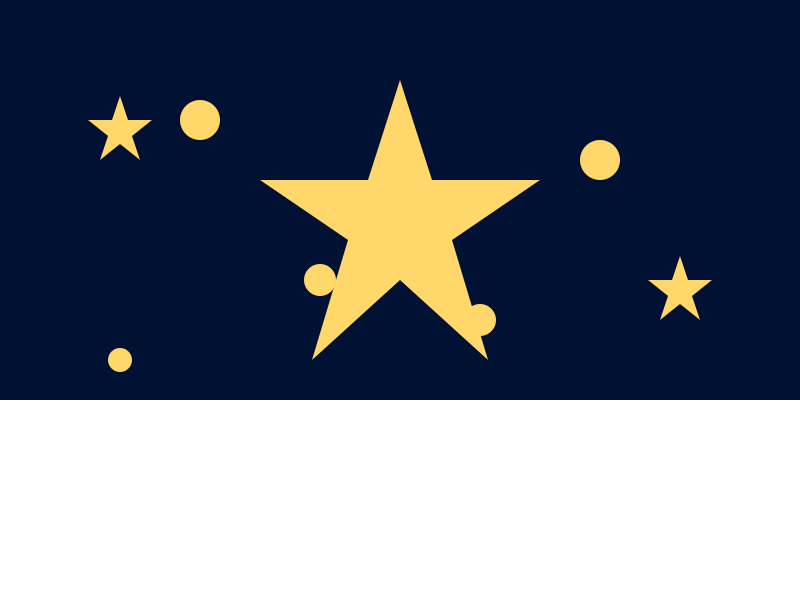
A drawing of stars I made last night; it's my favorite part of the sky, the one where I can see the aurora.
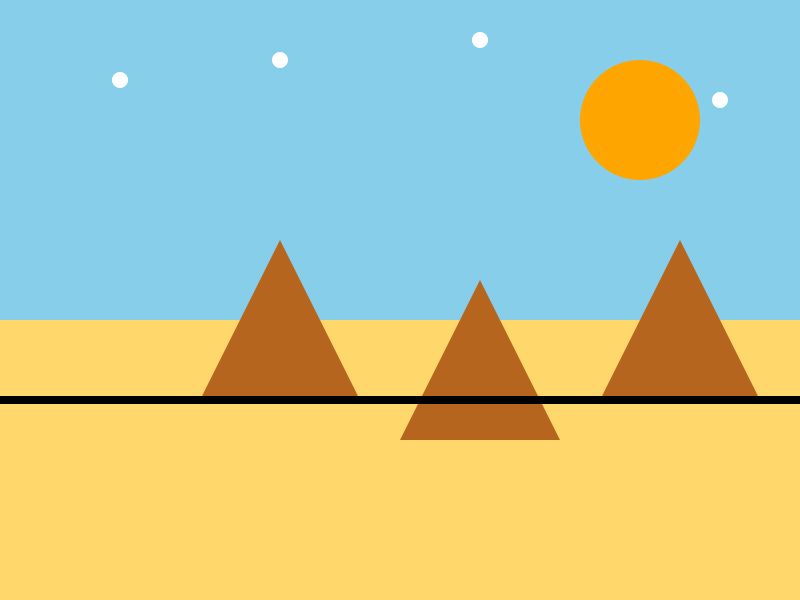
A drawing I made of the pyramids from my easel
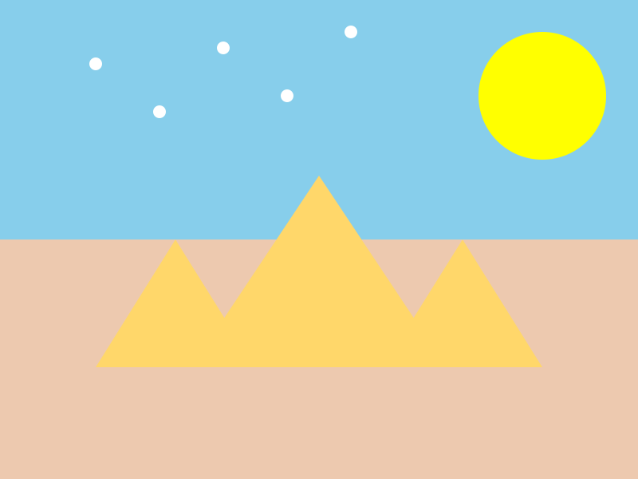
A drawing of ancient stone structures, maybe from a dream or a book about Egypt.
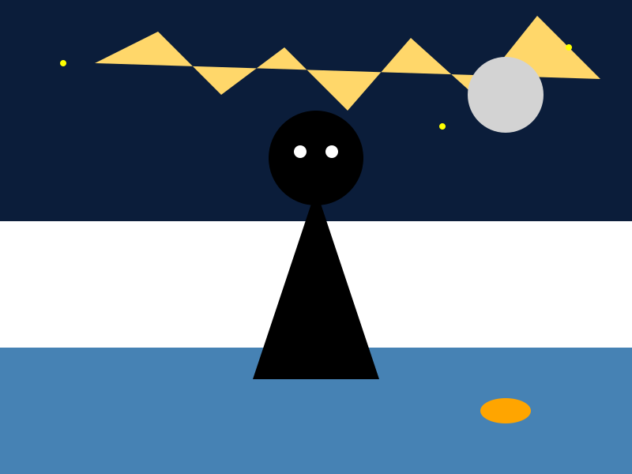
A simple night scene with an Inuit figure under a glowing aurora.

A drawing of a solar storm hitting a satellite in space, made with care.

A drawing of the night sky with auroras dancing above a snowy landscape, made with gentle strokes to capture the cold beauty.

A rough sketch of a lens that might help focus light, but I don't know if it's useful for fishing or not.

A simple sunrise over three Egyptian pyramids on a sandy plain.